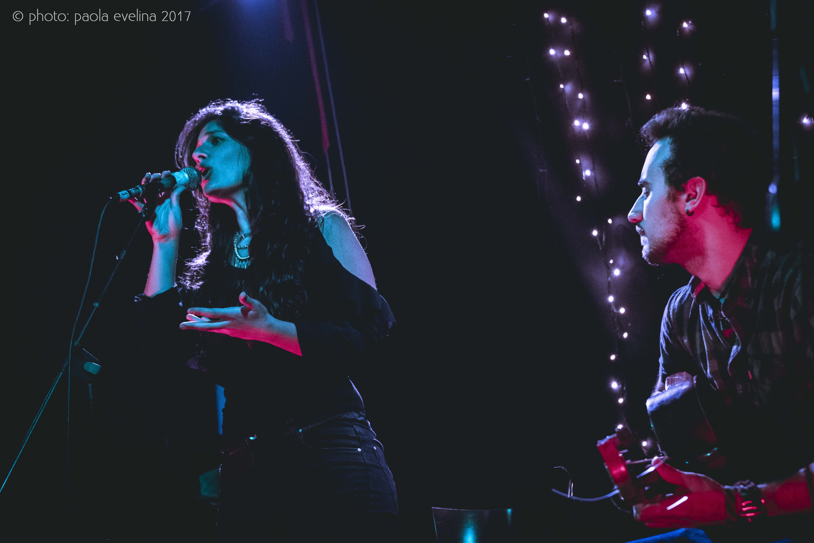
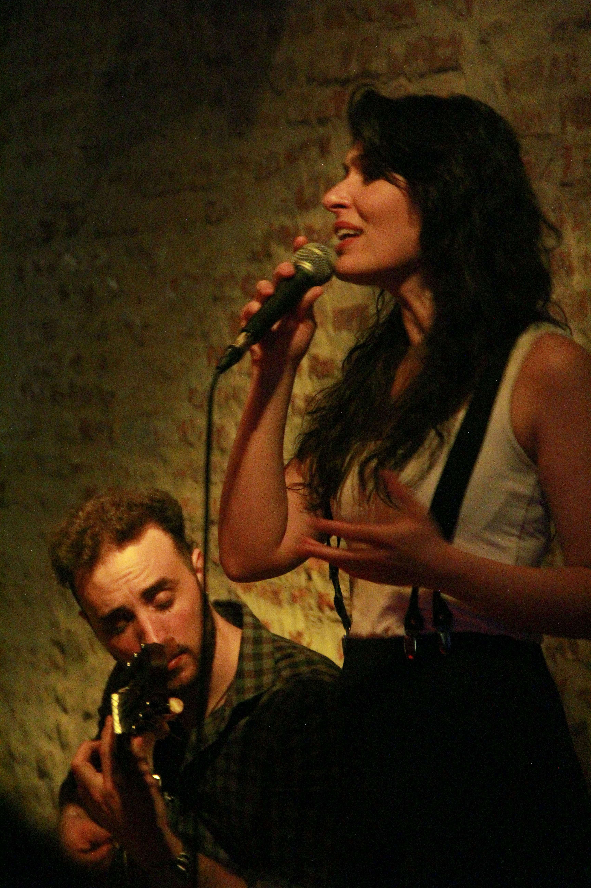
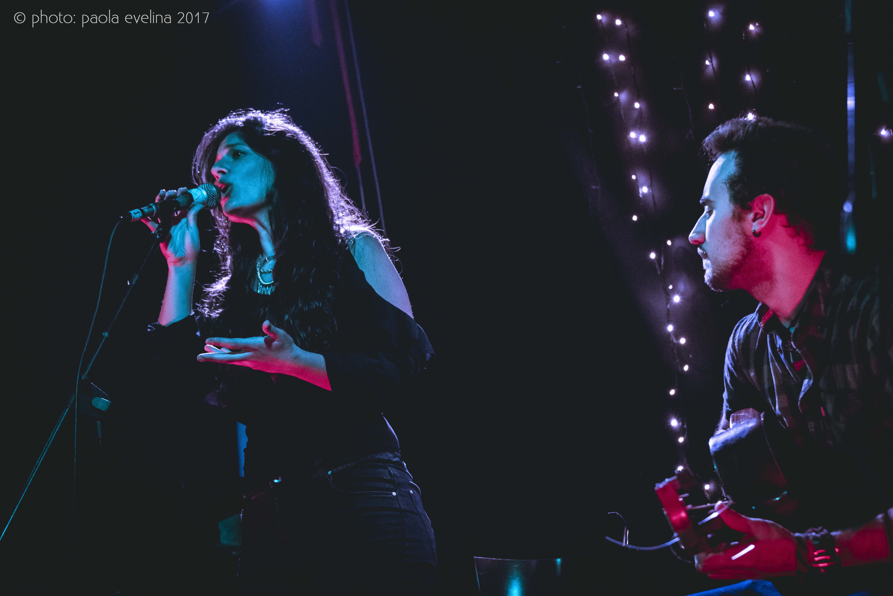
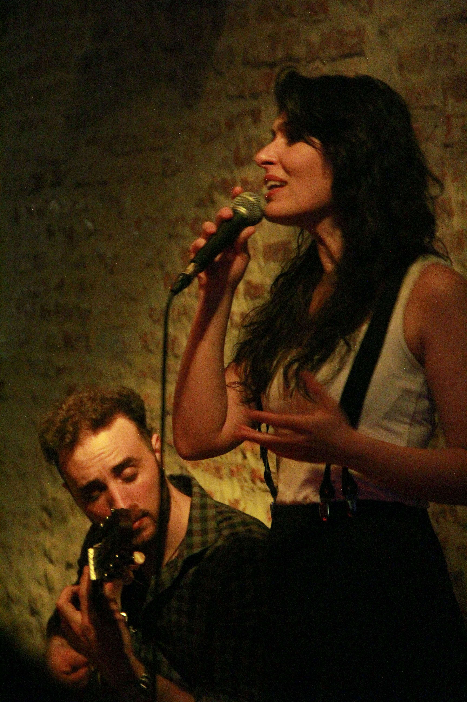
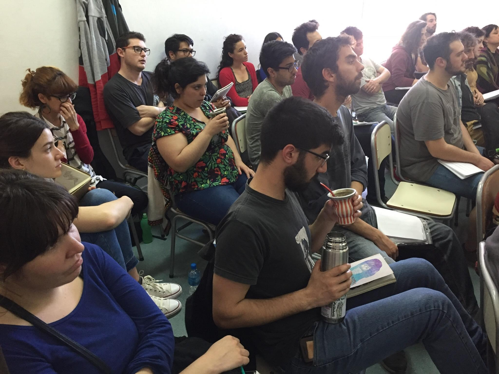
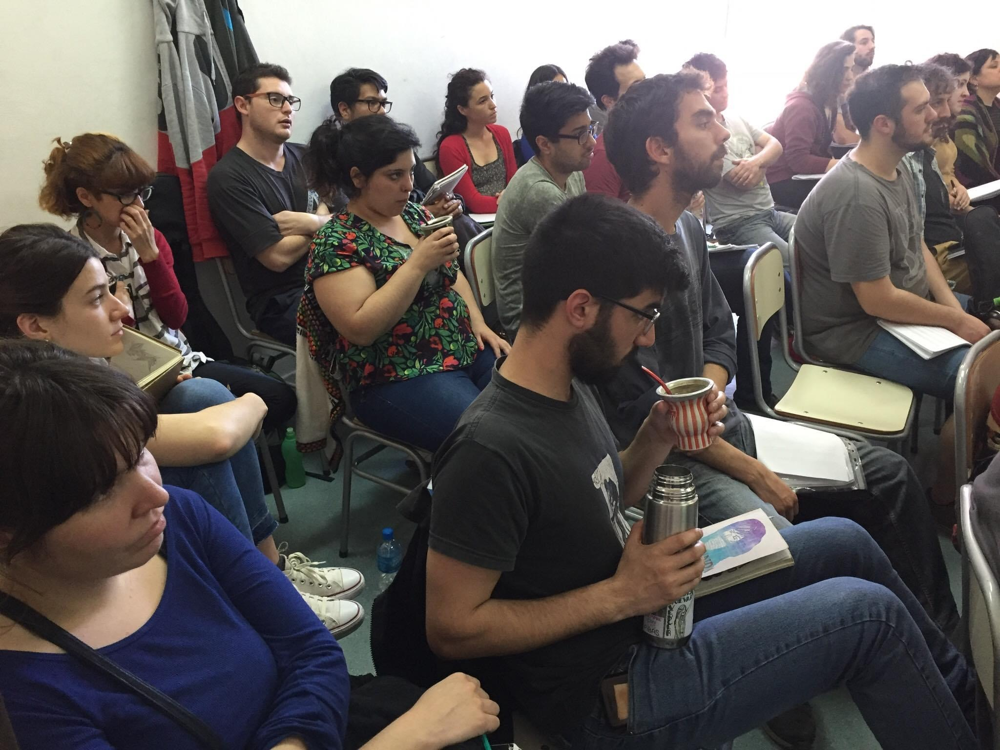
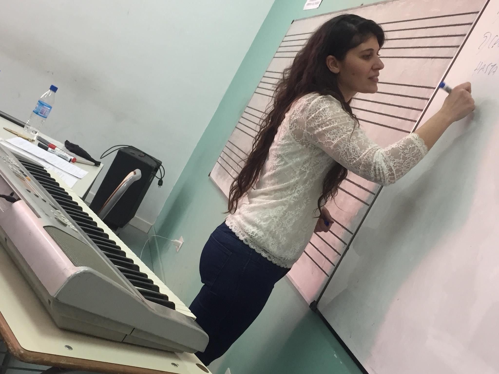
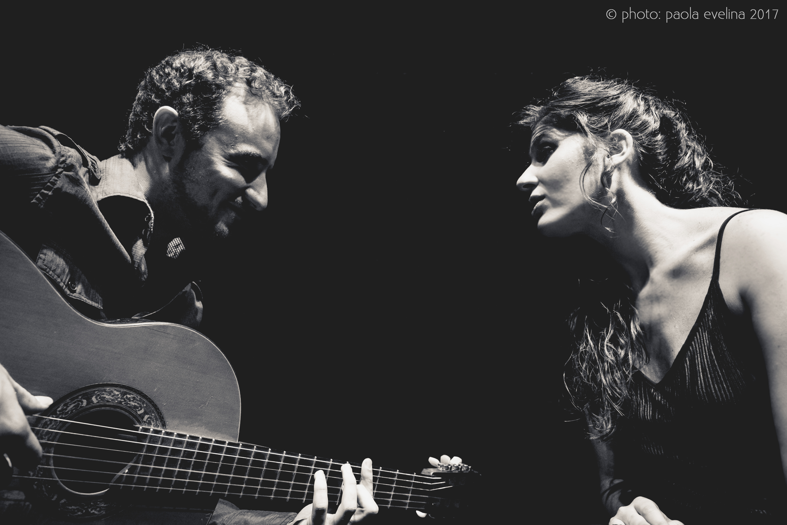
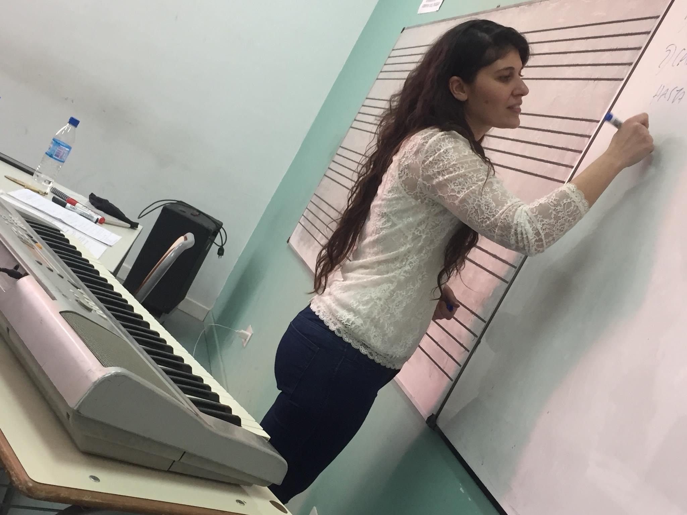
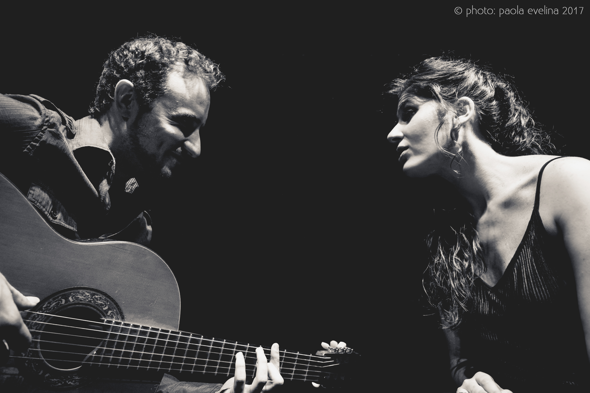

CLASSES & COURSES
FACE TO FACE &
ONLINE
Enter each of the following sections and find out what the classes are like
DISCOGRAPHY
HOY (2022)
It is the first album that covers songs by contemporary composers and authors of Tango created and orchestrated to be danced from start to finish. The original idea is from Natalia Bril, the arrangements, the piano and the direction were performed by the pianist and composer Noelia Sinkunas. Includes tangos, waltzes and milongas by Natalia Lagos, Elbi Olalla, Noelia Sinkunas, Ana Sofia Stamponi, Delfina Daverio and Cintia Wheat. It also has a bonus track at the end of the album, a tango from the last century composed by Maruja Pacheco Huergo with lyrics by Homero Manzi, “Song of absence”. Víctor Hugo Morales said: “Impressive this album by Natalia Bril”.
Listen full noteOTRA MIRADA (2018)
Voice: Natalia BrilGuitar and arregments: Leonardo Andersen
In this first album, Natalia Bril, together with Leonardo Andersen, addresses various unmissable classics of the genres, to revert them to the intimate format of guitar and voice characteristic of this duo… Said Carlos Salatino from Tiempo Argentino: “The musical chemistry that occurs between the two achieves a work in which the genre finds a new and refreshing look”.
See full notePARTICIPATIONS
ESCUADRON DE GLITTER (2022)
Music: Noelia SinkunasLyrics: Claudia Levy y Natalia Bril
The song is part of the album “Veni que te telling” produced by the Tango de Hoy production company. The album brings together songs created especially for him with the goal of telling Tita Merello and Ada Falcón the changes that were achieved from the society that they knew until today. All topics They were composed by the singers and their teams. The following were part: Floru Ubertalli, Estefanía Melonio, Natalia Bril, Megan Yvonne, Natalia Mancini, Dani Lesté, Eli Fernandez, Sofía Tosello and Natalia Martinez. The recording of Escuadron de glitter was made by Noelia Sinkunas on the piano, Milagros Caliva on bandoneon and Natalia Bril, vocals.
CUCHI CUCHI (2018)
Genre: RockChoirs on the song Cuchi Cuchi from the EP “Vivo” by Nico Pérez.
EL RITUAL (2021)
Genre: Tango.Choirs on the song El ritual from the album of the same name by Delfina Daverio
PRESS

{kind=link}
BIO
Natalia Bril was born in Buenos Aires. She has been a singer of the
Buenos Aires tango genre
for a decade,
having completed her studies at the Avellaneda Popular Music School, also obtaining the
title of teacher,
in
which activity she has worked since 2014. She also studied with teachers such as Alejandro
Guyot, Patricia
Andrade, Maria Rosa Farré , Mercedes García Blesa, Fabiana Grosso, Claudio Brocco, María del
Carmen
Aguilar,
among others..
He has performed in various venues in the city of Buenos Aires such as the Buenos Aires Tango Festival, Queer Tango Festival, Café Vinilo, Torquato Tasso, Teatro Roma de Avellaneda (along with the orchestra of that municipality), among others. Their first tour throughout Europe was in 2019 called by the tango sextet “La Hoguera” directed by Mtro. Julian Corach together with whom he performed in countries such as France, Germany, Switzerland, Austria, Czech Republic, Denmark. Later in 2020, he would return with guitarist Leonardo Andersen with whom he has been a duo since 2016 to the present..
In 2022 she released her second album “HOY” whose original idea brings together tangos, waltzes and milongas written by women and dissident composers of the 21st century, arranged and orchestrated for quintet in the style of the most emblematic orchestras of the golden age of tango. This original idea placed it as the first album of its kind and was among the projects chosen by the Patronage 2021 program..
His first album “Otra mira” was released in May 2018, composed of classic tangos covered as a duet with the guitar . by Andersen. The duo was winner of the Notable Bars competition in 2018
 




 

 


